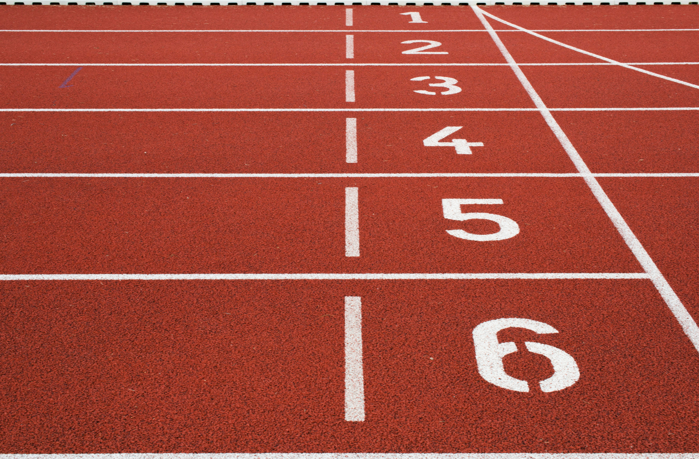

Tennis

Ages: 6 - 16
Schedule: Training Mon & Fri, Matches Sat
What Kids Learn: Coordination, focus, discipline.
The first activity offered by UYL was tennis, which still motivates a lot of young players today. As they practice serving, rallying, and playing matches, kids improve their hand-eye coordination, focus, and confidence. Tennis promotes amicable rivalry while simultaneously fostering personal accountability.
Soccer
Ages: 6 - 16
Schedule: Training Tue & Thu, Matches Sat
What Kids Learn:Ball control, passing, teamwork, fitness.
At UYL, we use soccer, the most popular sport in the world, to teach kids endurance,
discipline, and teamwork. The development of skills, strategy, and sportsmanship are the
main objectives of our curriculum.
Basketball

Ages: 8 - 16
Schedule: Training Mon & Wed, Games Fri
What Kids Learn:Dribbling, shooting, teamwork, confidence.
Basketball enhances confidence, agility, and reflexes.
Youngsters enjoy pleasant but competitive games, develop their ability to work with teams,
and think fast under pressure. It's the ideal sport for developing leadership and social skills.
Cricket

Ages: 10 - 16
Schedule: Training Wed & Fri, Matches Sat
What Kids Learn: Batting, bowing, strategy, patience.
Patience, concentration, and teamwork are skills that cricket imparts. Players work on their technical
abilities like bowling, fielding, and batting while also gaining maturity, and adherence to the
regulations. All skill levels can participate in our cricket program, from beginners to experts.
Athletics

Ages: 6 - 16
Schedule: Training Tue & Thu
What Kids Learn: Endurance, discipline, goal-setting.
Participating in sports enhances mental toughness, physical strength, and endurance.
We provide field events (jumps and throws) and track events (long-distance races, relays, and sprints).
In a secure, inspiring setting, kids learn to create personal objectives and push themselves.